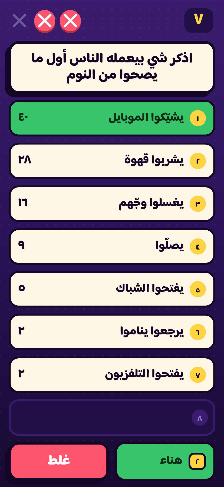
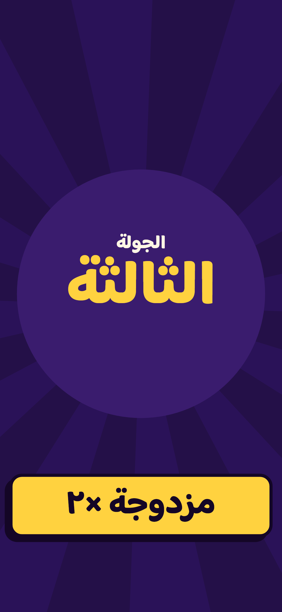
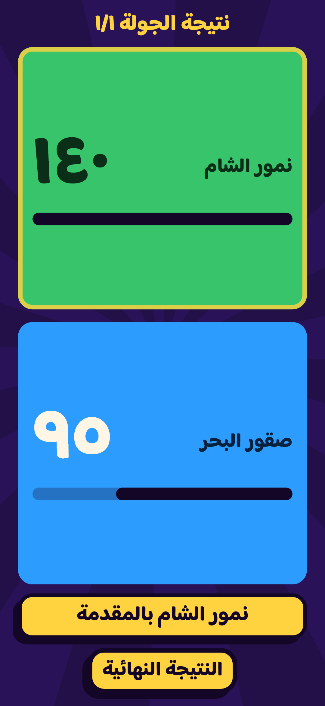

؟
مين الأطليسي
كيف تلعب
الشاشات
حمّل اللعبة
لعبة سهرات · فريقين · جهاز لكل لاعب
السؤال ينزل،
وأول واحد يضغط
يحكي
جهاز واحد يصير لوح النتائج، وكل لاعب يفوت من تلفونه. تقسمون فريقين، تفتحون غرفة، وتبلّشون. ما في ورق، ما في تسجيل، ولا في شرح طويل.
ابدأ سهرة
شوف كيف تلعب
٤ – ١٢
لاعب بالسهرة
١٠ ثواني
وقت الجواب
حتى ٨ جولات
بالسهرة الكاملة

ثلاث خطوات وبتكونون لاعبين
ما بتحتاجون حساب ولا إعدادات. تلفون واحد يمسك اللعبة، والباقي يفوتوا عليه.
١
افتح غرفة
سمّي الغرفة واختار عدد الجولات. اللعبة بتطلّع لك الغرفة جاهزة بثانية.
٢
الباقي يفوتوا
كل واحد يكتب اسمه ويختار فريقه — أخضر أو أزرق. الأسماء تطلع على لوح النتائج مباشرة.
٣
اضغط أول
السؤال ينزل على كل الأجهزة. أول واحد يضغط الزر إله الحق يجاوب، والنقاط تتحسب لحالها.
ليش بتشتغل بالسهرات
زر جرس على كل تلفون
ما في زحمة على جهاز واحد. الزر بيقفل لحاله لما حد يسبق، وبيبيّن مين ضغط أول.
النقاط تتحسب لحالها
لوح نتائج للفريقين، وكشف النقاط بين الجولات. ما في حد يمسك ورقة وقلم.
أسئلة عن اللي حواليك
الأسئلة عن اللاعبين نفسهم — مين الأطليسي اللي يعمل كذا. كل سهرة تطلع غير.
بدون حساب ولا إنترنت بعيد
نفس الشبكة وبس. تفتح، تكتب اسمك، وتلعب. ولا تسجيل ولا انتظار.
من جوّا اللعبة
لوح المضيف — السؤال والأجوبة

بداية الجولة

النتيجة بين الجولات
جمّع الشباب وشوف مين الأطليسي
حمّل اللعبة على تلفونك، افتح غرفة، وخلّي الباقي يفوتوا عليك.
حمّل اللعبة (APK)
نسخة الديمو
أندرويد ٨ فما فوق · أول تركيب بدّه تسمح بـ«مصادر غير معروفة»
مين الأطليسي — لعبة سهرات عربية
كيف تلعب
الشاشات
حمّل
GitHub